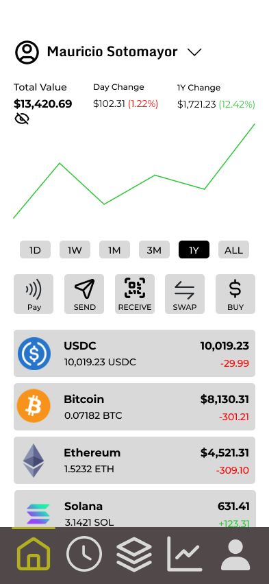

The Future of Web3 Wallets

Cryptocurrencies have surged in interest ever since Bitcoin in 2009 — but I believe the thing holding back adoption isn't the technology. It's the experience. So I designed the wallet I'd actually want to use.
Over the years, there have been exponentially more advancements in blockchain technology. However, one of the main factors preventing blockchain adoption is the lack of a seamless user experience compared to the traditional payment methods we rely on today. "What would make this a better experience?" I asked myself. A comprehensive, yet easy to use mobile wallet was my first thought.
My career transition to product management was largely influenced by my passion for UX/UI. I love the design aspect of technology — building software with a sleek interface that's easy to use. I took this as an opportunity to create a wireframe and prototype of what a comprehensive mobile wallet would look like using Figma. There were a few key components I looked to address with this design:
- Easy view of account balance
- A username associated with the wallet to simplify peer-to-peer interactions
- Straightforward action buttons to complete transactions
- Quick view to your transaction history
- Simple way to view and interact with NFTs
- Easily accessible market to buy assets
As I began to create the wireframe in Figma, I progressively added more details to the design, eventually leading to the prototype that you can view by clicking the button below.
Please note that this is a fictitious app and all numbers/images/examples provided are for illustrative purposes only.
Home Screen

Let's start with the home screen. My concept here is influenced by many financial apps, where your balance is clearly presented and changes over time can be viewed both numerically and graphically. At the top of the screen you'll notice a dropdown option next to the name — where users would be able to switch between accounts. In this ideal wallet, a wallet address (a long, unique identifier that allows users to send and receive cryptocurrency) would be directly tied to an account with an easily legible (and non-repeatable) username.
In the center section, there would be the primary action buttons needed for most transaction types:
- Pay — users select the currency/blockchain for the transaction and can use a "tap to pay" functionality to pay from their phone (in person) at a business point-of-sale system.
- Send — users select a username (contact) to send currency to, or use the camera to read a QR code from the recipient's wallet. "Send" and "Receive" would be similar functionalities to contact-based payment apps such as Venmo, Cash App, or Zelle.
- Receive — reveals a QR code, username, and wallet address that others can use to send payments to.
- Swap — swap between currencies in your account.
- Buy — purchase currencies, tokens, or other assets from the market.
The bottom portion of the page shows the coins and tokens held within the account, including their value and change over the last 24 hours.
Transaction History

This page is fairly self-explanatory — it provides a history of transactions for the selected account. This would include the party that the transaction was with, whether money was sent or received, and the currency of the transaction. Purchases of other assets such as NFTs would be shown for visibility.
In a world where businesses adopt blockchain technology for payments, those business names would appear here (just as they are shown in banking statements). A search button at the top provides an easy way to search for transactions with other accounts or for a particular time period.
NFTs

I believe that Non-Fungible Tokens (NFTs) will play an important role in society for their ability to provide ownership and authenticity of assets. I see huge (and more easily attainable) value in NFTs for storing assets such as tickets — flight tickets and sporting event tickets, as shown in the prototype. As this technology is rolled out into these real-world applications, being able to easily access your tickets within your wallet will prove an improvement to this experience:
- Guaranteed validity of tickets sold (no more scams from Craigslist)
- Easily access tickets for events directly from your wallet
- Transfer/sell these NFTs to others from wallet to wallet
- Resell tickets by connecting your wallet to a marketplace for NFTs
This is the section I have labeled "Active Tickets" at the top — to display tickets (NFTs) for events that have not yet occurred. Below that, all other NFTs representing other assets (such as art) are displayed with a preview and description. Clicking into any NFT in the wallet would provide more detailed information.
Market

In an ideal wallet, access to markets is incorporated to easily purchase other cryptocurrencies, tokens, and other assets. At the top of the page there are four sections:
- Cryptocurrencies — purchase or sell cryptocurrency. The display includes the coin, icon, current price, price change (%), and the ability to add coins to your watchlist.
- Stocks — in the future, I believe many assets (such as company stocks) will be available on the blockchain as tokenized assets. Here I demonstrate how they could be purchased directly from within the wallet like cryptocurrencies would be.
- NFTs — markets for different NFTs would be compiled here, allowing users to both purchase and list their NFTs for sale.
- News — many financial apps have a section for news, which is useful for reading the latest updates related to the assets you follow.
I think this is likely to be the most technically complicated portion of the wallet, and may be lower priority in its initial stages relative to the other pages I have designed. There are many existing applications and markets where these cryptocurrencies and tokens can be purchased, but I believe merging much of this functionality into one app will prove to be the best user experience. Imagine no longer needing to purchase cryptocurrency from a centralized exchange and transferring it to your wallet — instead it would immediately be available directly from your wallet!
Profile & Settings

As with many apps, there would be a page dedicated to personalizing your account and adjusting your settings. At the top, you are able to change your profile picture, edit your username, or switch accounts. There is also a button that allows you to view contacts you have added to your contact list. This is an important feature for allowing others with wallets to easily search and identify your account (and therefore your wallet addresses) — a much-needed improvement to drive adoption of cryptocurrency as a means of transactions.
In the settings, you are able to view your account addresses (for various blockchains), customize notification settings, view your secret recovery phrase and private keys, see login history, and enable/disable Face ID. Although not scoped out for this prototype, other display, security, and support-related settings or content would live here.
Conclusion
I had a great time building this prototype. It was a good exercise to practice my design skills with Figma and really think through what a sleek user experience would look like within a wallet application. Putting a visualization behind some of the concepts I feel are needed to improve adoption in this industry is an exciting challenge that gives me hope that this "wishlist" can truly become reality one day.
I'd like to point out that there are many wallet applications available today, but I don't find that any of them are truly as simple as they ought to be to grab the attention of the average person. Many of the existing wallets assume the user has a good bit of background on cryptocurrency/blockchain technology and are geared towards much more technical users. A large jump in adoption will come when we see significant improvements to the UX for on-ramps (converting fiat currency to cryptocurrency) and day-to-day transactions.